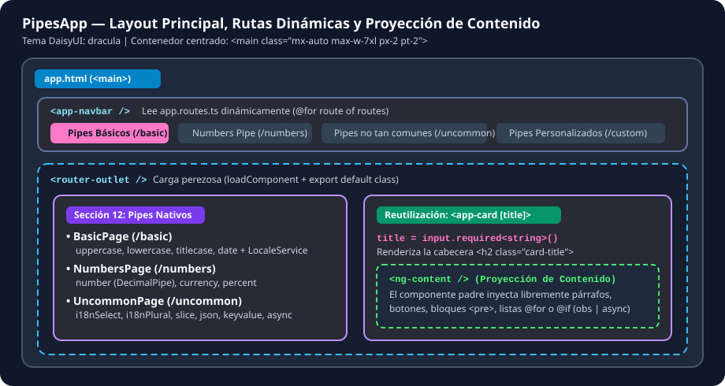

Sección 12: PipesApp — Pipes Nativos, Internacionalización (i18n) y Proyección de Contenido¶
En esta sección construimos PipesApp (05-pipes-app), una aplicación interactiva diseñada para dominar todos los Pipes integrados de Angular (@angular/common): desde transformaciones básicas de texto, números y fechas, hasta internacionalización dinámica (LOCALE_ID y registerLocaleData), proyección de contenido (<ng-content />) y pipes avanzados como i18nSelect, i18nPlural, slice, json, keyvalue y async (tanto con Promesas como con Observables de RxJS).
📋 Ficha Técnica y Objetivos Didácticos¶
- Proyecto:
05-pipes-app(Catálogo interactivo de Pipes nativos de Angular). - Stack Tecnológico (Angular 22): Componentes Standalone zoneless, Lazy Loading (
loadComponent+export default), Signals (signal(),input.required(),effect((onCleanup) => ...)),@Service(), Tailwind CSS + DaisyUI (temadracula), RxJS (interval,map,tap), i18n (LOCALE_ID,registerLocaleData). - Patrones Arquitectónicos:
- Declarative View Transformation: Transformar datos visualmente en la plantilla sin mutar el estado original de las Signals.
- Dynamic Route-Driven Navigation: El componente
Navbarderiva sus enlaces directamente del array de configuraciónapp.routes.ts. - Content Projection (
<ng-content />): Contenedor visual reutilizableCardque proyecta HTML arbitrario del componente padre. - Dynamic DI Factory (
useFactory): Inyección dinámica del tokenLOCALE_IDleyendo la preferencia persistida enLocaleService.
- Código Fuente de Referencia: GitHub - DevTalles PipesApp (fin-seccion-12)

flowchart LR
subgraph AppShell ["Contenedor Principal (App)"]
Nav["<b><app-navbar /></b><br/>Lee <code>app.routes.ts</code>"]
Outlet["<b><router-outlet /></b><br/>Carga perezosa"]
end
subgraph Paginas ["Páginas Lazy-Loaded"]
Basic["<b>/basic</b><br/><code>uppercase</code>, <code>lowercase</code>,<br/><code>titlecase</code>, <code>date</code> + i18n"]
Numbers["<b>/numbers</b><br/><code>number</code>, <code>currency</code>,<br/><code>percent</code>"]
Uncommon["<b>/uncommon</b><br/><code>i18nSelect</code>, <code>i18nPlural</code>,<br/><code>slice</code>, <code>json</code>, <code>keyvalue</code>, <code>async</code>"]
Custom["<b>/custom</b><br/>Pipes personalizados<br/>(Sección 13)"]
end
subgraph Servicio ["Idioma Global"]
Locale["<b>LocaleService (@Service())</b><br/><code>LOCALE_ID</code> + <code>localStorage</code>"]
end
Nav --> Outlet
Outlet --> Basic
Outlet --> Numbers
Outlet --> Uncommon
Outlet --> Custom
Locale -. "Inyecta locale activo" .-> Basic
Locale -. "Formatea moneda y decimales" .-> Numbers1. Inicio del Proyecto, Tailwind CSS + DaisyUI y Estructura Base¶
Creamos un proyecto Angular 22 nuevo con estilos CSS estándar y sin SSR/SSG, y renombramos la carpeta a 05-pipes-app:
Configuramos Tailwind CSS y DaisyUI igual que en proyectos anteriores, activando el tema dracula como tema principal:
1.1. Estructura de Carpetas y Páginas Lazy-Loaded¶
Organizamos src/app/ separando responsabilidades en cuatro carpetas:
src/app/
├── components/
│ ├── navbar/
│ └── card/
├── interfaces/
├── pages/
│ ├── basic-page/
│ ├── numbers-page/
│ ├── uncommon-page/
│ └── custom-page/
├── services/
│ └── locale.service.ts
├── app.config.ts
├── app.html
├── app.routes.ts
└── app.ts
Generamos las cuatro páginas principales desde la terminal:
ng g c pages/basic-page --skip-tests --inline-style
ng g c pages/numbers-page --skip-tests --inline-style
ng g c pages/uncommon-page --skip-tests --inline-style
ng g c pages/custom-page --skip-tests --inline-style
Añadimos export default class a cada página (BasicPage, NumbersPage, UncommonPage y CustomPage) para simplificar su importación en el router, y configuramos src/app/app.routes.ts con la propiedad title en cada ruta (Angular actualizará automáticamente el título de la pestaña del navegador y podremos reutilizarlo en la barra de navegación):
import { Routes } from '@angular/router';
export const routes: Routes = [
{
path: 'basic',
title: 'Pipes Básicos',
loadComponent: () => import('./pages/basic-page/basic-page'),
},
{
path: 'numbers',
title: 'Numbers Pipe',
loadComponent: () => import('./pages/numbers-page/numbers-page'),
},
{
path: 'uncommon',
title: 'Pipes no tan comunes',
loadComponent: () => import('./pages/uncommon-page/uncommon-page'),
},
{
path: 'custom',
title: 'Pipes Personalizados',
loadComponent: () => import('./pages/custom-page/custom-page'),
},
{
path: '**',
redirectTo: 'basic',
},
];
2. Barra de Navegación Dinámica (Navbar)¶
En lugar de escribir a mano los enlaces del menú y duplicar los títulos de las rutas, vamos a leer dinámicamente el array routes de app.routes.ts.
Generamos el componente Navbar:
import { Component } from '@angular/core';
import { RouterLink, RouterLinkActive } from '@angular/router';
import { routes } from '../../app.routes';
@Component({
selector: 'app-navbar',
imports: [RouterLink, RouterLinkActive],
templateUrl: './navbar.html',
})
export class Navbar {
routes = routes
.filter((route) => route.path !== '**')
.map((route) => ({
title: route.title ?? '',
path: route.path ?? '',
}));
}
Detalles importantes en Navbar
- ¿Por qué
routesno es una Signal? Porque el array de rutas es una configuración estática que no cambia durante la ejecución. No es necesario envolver valores constantes ensignal(). [routerLink]con corchetes vsrouterLinkActivesin corchetes:[routerLink]="route.path"evalúa la expresión TypeScriptroute.path, mientras querouterLinkActive="text-accent"recibe el nombre literal de la clase CSS.- Filtrar la ruta comodín
**: Si no filtramosroute.path !== '**', se generaría un<li>vacío al final del menú porque la ruta de redirección no tienetitle.
3. Pipes de Texto: LowerCasePipe, UpperCasePipe y TitleCasePipe¶
Un Pipe transforma visualmente un dato justo antes de mostrarlo en la plantilla mediante el operador | (pipe), sin modificar nunca el valor almacenado en la Signal o variable original.
En BasicPage definimos tres Signals de texto y empezamos aplicando LowerCasePipe en la primera tarjeta de estadísticas de DaisyUI (stats):
import { Component, signal } from '@angular/core';
import { LowerCasePipe } from '@angular/common';
@Component({
selector: 'app-basic-page',
imports: [LowerCasePipe],
templateUrl: './basic-page.html',
})
export default class BasicPage {
nameLower = signal('fernando');
nameUpper = signal('FERNANDO');
fullName = signal('feRnaNdo HeRreRa');
}
<section class="mx-5">
<h1 class="text-2xl font-bold">Pipes Básicos</h1>
<h3 class="text-xl font-thin">Pipes incluidos en Angular</h3>
</section>
<div class="stats stats-vertical lg:stats-horizontal shadow w-full">
<div class="stat">
<div class="stat-title">Lowercase Pipe</div>
<div class="stat-value">{{ nameUpper() | lowercase }}</div>
<div class="stat-desc">{{ nameUpper() }}</div>
</div>
<!-- TODO: Completar en la Tarea Práctica 1 -->
</div>
🎯 Tarea Práctica 1: Completar UpperCasePipe y TitleCasePipe¶
📋 Enunciado del Reto¶
Completa la sección de estadísticas de BasicPage añadiendo dos tarjetas .stat adicionales:
- Segunda tarjeta (
Uppercase Pipe): muestranameLower()transformado a mayúsculas con el pipeuppercase, y debajo (stat-desc) el valor original denameLower(). - Tercera tarjeta (
TitleCase Pipe): muestrafullName()capitalizando cada palabra con el pipetitlecase, y debajo (stat-desc) el valor original defullName().
⏸️ Reto Práctico: ¡Inténtalo tú mismo!¶
Pausa de Trabajo Autónomo
Antes de consultar la solución, importa los dos pipes necesarios en basic-page.ts y añade las dos tarjetas .stat en basic-page.html. Comprueba en el navegador que los valores originales mostrados en .stat-desc permanecen intactos.
⚠️ Errores Típicos¶
- Olvidar importar el pipe en el componente Standalone: si escribes
| uppercaseo| titlecaseen el HTML sin añadirUpperCasePipeyTitleCasePipeal arrayimportsde@Component, Angular lanzará el errorNG8004: No pipe found with name 'uppercase'. - Confundir el nombre de la clase con el nombre del pipe en plantilla: la clase se llama
TitleCasePipe, pero en HTML se invoca siempre en minúsculas:| titlecase.
✅ Solución de la Tarea Práctica 1¶
import { Component, signal } from '@angular/core';
import { LowerCasePipe, TitleCasePipe, UpperCasePipe } from '@angular/common';
@Component({
selector: 'app-basic-page',
imports: [LowerCasePipe, UpperCasePipe, TitleCasePipe],
templateUrl: './basic-page.html',
})
export default class BasicPage {
nameLower = signal('fernando');
nameUpper = signal('FERNANDO');
fullName = signal('feRnaNdo HeRreRa');
}
<section class="mx-5">
<h1 class="text-2xl font-bold">Pipes Básicos</h1>
<h3 class="text-xl font-thin">Pipes incluidos en Angular</h3>
</section>
<div class="stats stats-vertical lg:stats-horizontal shadow w-full">
<div class="stat">
<div class="stat-title">Lowercase Pipe</div>
<div class="stat-value">{{ nameUpper() | lowercase }}</div>
<div class="stat-desc">{{ nameUpper() }}</div>
</div>
<div class="stat">
<div class="stat-title">Uppercase Pipe</div>
<div class="stat-value">{{ nameLower() | uppercase }}</div>
<div class="stat-desc">{{ nameLower() }}</div>
</div>
<div class="stat">
<div class="stat-title">TitleCase Pipe</div>
<div class="stat-value">{{ fullName() | titlecase }}</div>
<div class="stat-desc">{{ fullName() }}</div>
</div>
</div>
4. Pipes Numéricos: DecimalPipe, CurrencyPipe y PercentPipe¶
En NumbersPage trabajamos con los tres pipes numéricos de @angular/common. Fíjate en el uso del separador numérico _ de JavaScript/TypeScript (2_433_232.5567), que mejora la legibilidad sin alterar el número.
Atención al nombre de DecimalPipe
La clase que importamos desde @angular/common es DecimalPipe, pero en la plantilla HTML su nombre es number (por ejemplo, {{ totalSells() | number : '1.2-2' }}).
Los argumentos de un pipe se separan mediante dos puntos (:). En el formato de dígitos 'minEnteros.minDecimales-maxDecimales', '1.2-2' indica al menos 1 dígito entero y exactamente 2 decimales (redondeando automáticamente).
import { Component, signal } from '@angular/core';
import { CurrencyPipe, DecimalPipe, PercentPipe } from '@angular/common';
@Component({
selector: 'app-numbers-page',
imports: [DecimalPipe, PercentPipe, CurrencyPipe],
templateUrl: './numbers-page.html',
})
export default class NumbersPage {
totalSells = signal(2_433_232.5567);
percent = signal(0.4856);
}
<section class="mx-5">
<h1 class="text-2xl font-bold">Pipes Numéricos</h1>
<h3 class="text-xl font-thin">Pipes incluidos en Angular</h3>
</section>
<div class="stats stats-vertical lg:stats-horizontal shadow w-full">
<div class="stat">
<div class="stat-title">Number: '1.2-2'</div>
<div class="stat-value">{{ totalSells() | number : '1.2-2' }}</div>
<div class="stat-desc">{{ totalSells() }}</div>
</div>
<div class="stat">
<div class="stat-title">Number: '1.1-2' (con expresión)</div>
<div class="stat-value">{{ totalSells() + 1234 | number : '1.1-2' }}</div>
<div class="stat-desc">{{ totalSells() }}</div>
</div>
<div class="stat">
<div class="stat-title">Currency</div>
<div class="stat-value">
{{ totalSells() | currency : 'CAD' : 'symbol-narrow' : '1.4-4' }}
</div>
<div class="stat-desc">{{ totalSells() }}</div>
</div>
<div class="stat">
<div class="stat-title">Percent</div>
<div class="stat-value">{{ percent() | percent : '1.2-2' }}</div>
<div class="stat-desc">{{ percent() }}</div>
</div>
</div>
| Pipe | Clase | Argumentos del ejemplo | Resultado aproximado (en) |
|---|---|---|---|
number |
DecimalPipe |
'1.2-2' |
2,433,232.56 |
currency |
CurrencyPipe |
'CAD' : 'symbol-narrow' : '1.4-4' |
$2,433,232.5567 |
percent |
PercentPipe |
'1.2-2' |
48.56% |
5. DatePipe y Reloj Reactivo con effect((onCleanup) => ...)¶
Volvemos a BasicPage para trabajar con fechas mediante DatePipe. Además de probar formatos predefinidos ('long', 'short'), zonas horarias ('GMT-6', 'GMT-4') y formatos personalizados ('yyyy MM', 'dd/MM/yyyy', 'HH:mm:ss', 'EEEE d, MMMM'), hacemos que customDate se actualice cada segundo como un reloj real usando effect con limpieza obligatoria (onCleanup):
import { Component, effect, signal } from '@angular/core';
import { DatePipe, LowerCasePipe, TitleCasePipe, UpperCasePipe } from '@angular/common';
@Component({
selector: 'app-basic-page',
imports: [LowerCasePipe, UpperCasePipe, TitleCasePipe, DatePipe],
templateUrl: './basic-page.html',
})
export default class BasicPage {
nameLower = signal('fernando');
nameUpper = signal('FERNANDO');
fullName = signal('feRnaNdo HeRreRa');
customDate = signal(new Date());
tickingDateEffect = effect((onCleanup) => {
const interval = setInterval(() => {
this.customDate.set(new Date());
}, 1000);
onCleanup(() => {
clearInterval(interval);
});
});
}
Fuga de memoria si omites onCleanup
Si no llamas a clearInterval(interval) dentro de onCleanup, cada vez que el usuario navegue a otra ruta y vuelva a /basic se creará un nuevo intervalo sin destruir el anterior, acumulando temporizadores en memoria indefinidamente.
Añadimos tres filas de estadísticas en basic-page.html separadas con <div class="divider"></div> de DaisyUI:
<div class="divider"></div>
<div class="stats stats-vertical lg:stats-horizontal shadow w-full">
<div class="stat">
<div class="stat-title">Date Pipe</div>
<div class="stat-value">{{ customDate() | date }}</div>
<div class="stat-desc">{{ customDate() }}</div>
</div>
<div class="stat">
<div class="stat-title">Date | long | GMT-6</div>
<div class="stat-value">{{ customDate() | date : 'long' : 'GMT-6' }}</div>
<div class="stat-desc">{{ customDate() }}</div>
</div>
</div>
<div class="stats stats-vertical lg:stats-horizontal shadow w-full">
<div class="stat">
<div class="stat-title">Date: 'yyyy MM'</div>
<div class="stat-value">{{ customDate() | date : 'yyyy MM' }}</div>
<div class="stat-desc">{{ customDate() }}</div>
</div>
<div class="stat">
<div class="stat-title">Date | short | GMT-4</div>
<div class="stat-value">{{ customDate() | date : 'short' : 'GMT-4' }}</div>
<div class="stat-desc">{{ customDate() }}</div>
</div>
</div>
<div class="divider"></div>
<div class="stats stats-vertical lg:stats-horizontal shadow w-full">
<div class="stat">
<div class="stat-title">Date Pipe</div>
<div class="stat-value">{{ customDate() | date : 'dd/MM/yyyy' }}</div>
<div class="stat-desc">{{ customDate() }}</div>
</div>
<div class="stat">
<div class="stat-title">Date Pipe</div>
<div class="stat-value">{{ customDate() | date : 'HH:mm:ss' }}</div>
<div class="stat-desc">{{ customDate() }}</div>
</div>
<div class="stat">
<div class="stat-title">Date Pipe</div>
<div class="stat-value">{{ customDate() | date : 'EEEE d, MMMM' }}</div>
<div class="stat-desc">{{ customDate() }}</div>
</div>
</div>
6. Internacionalización (i18n): registerLocaleData y LocaleService¶
Por defecto, Angular solo incluye el idioma inglés (en-US). Si intentamos configurar el LOCALE_ID en 'es' o 'fr' sin registrar primero los datos regionales, Angular lanzará el error NG02100: Missing locale data for the locale "es".
6.1. Servicio LocaleService con @Service() (Angular 22)¶
Creamos src/app/services/locale.service.ts para gestionar el idioma activo, persistirlo en localStorage y recargar la aplicación al cambiar de idioma (necesario porque LOCALE_ID se evalúa durante el arranque de la aplicación):
import { Service, signal } from '@angular/core';
export type AvailableLocale = 'es' | 'fr' | 'en';
@Service()
export class LocaleService {
private currentLocale = signal<AvailableLocale>('fr');
constructor() {
this.currentLocale.set(
(localStorage.getItem('locale') as AvailableLocale) ?? 'es'
);
}
get getLocale() {
return this.currentLocale();
}
changeLocale(locale: AvailableLocale) {
localStorage.setItem('locale', locale);
this.currentLocale.set(locale);
window.location.reload();
}
}
6.2. Registro de Locales y Proveedor Dinámico en app.config.ts¶
En src/app/app.config.ts registramos los paquetes de español (es) y francés (fr) —el inglés ya viene incluido— y proveemos LOCALE_ID mediante una factoría (useFactory) conectada a LocaleService:
import { ApplicationConfig, LOCALE_ID, provideBrowserGlobalErrorListeners } from '@angular/core';
import { provideRouter } from '@angular/router';
import { registerLocaleData } from '@angular/common';
import { routes } from './app.routes';
import { LocaleService } from './services/locale.service';
import localeEs from '@angular/common/locales/es';
import localeFr from '@angular/common/locales/fr';
registerLocaleData(localeEs, 'es');
registerLocaleData(localeFr, 'fr');
export const appConfig: ApplicationConfig = {
providers: [
provideBrowserGlobalErrorListeners(),
provideRouter(routes),
{
provide: LOCALE_ID,
deps: [LocaleService],
useFactory: (localeService: LocaleService) => localeService.getLocale,
},
],
};
Variantes regionales
También puedes importar variantes específicas como @angular/common/locales/es-ES, es-AR o es-MX si necesitas convenciones concretas de moneda o formato de fecha de un país determinado.
6.3. Botones de Cambio de Idioma en BasicPage¶
Inyectamos LocaleService y el token LOCALE_ID en BasicPage, y añadimos tres botones en la parte inferior de basic-page.html para cambiar de idioma en vivo:
import { Component, effect, inject, LOCALE_ID, signal } from '@angular/core';
import { AvailableLocale, LocaleService } from '../../services/locale.service';
// ... dentro de BasicPage
export default class BasicPage {
localeService = inject(LocaleService);
currentLocale = signal(inject(LOCALE_ID));
// ... resto de propiedades y tickingDateEffect
changeLocale(locale: AvailableLocale) {
this.localeService.changeLocale(locale);
}
}
<div class="flex flex-row gap-2 mt-4">
<h1 class="text-2xl font-bold">
Locale Actual:
<span class="badge badge-secondary">{{ currentLocale() }}</span>
</h1>
<button (click)="changeLocale('fr')" class="btn btn-primary">
Changer en français
</button>
<button (click)="changeLocale('en')" class="btn btn-primary">
Change to English
</button>
<button (click)="changeLocale('es')" class="btn btn-primary">
Cambiar a español
</button>
</div>
Comprueba ahora tanto /basic (los nombres de días y meses en DatePipe) como /numbers (el separador de miles y decimales en DecimalPipe y CurrencyPipe): todos se adaptan automáticamente al LOCALE_ID activo.
7. Proyección de Contenido: Componente Reutilizable Card¶
Para la página de pipes no tan comunes (UncommonPage), todas las tarjetas comparten exactamente el mismo marco visual de DaisyUI, pero cada una tiene un cuerpo distinto (textos, botones, listas @for, bloques <pre>, etc.). En lugar de repetir la estructura de la tarjeta seis veces, creamos un componente contenedor Card que utiliza Proyección de Contenido (<ng-content />).
Todo el HTML que coloquemos entre <app-card title="..."> y </app-card> en UncommonPage se proyectará exactamente donde está <ng-content />.
Profundiza en Proyección de Contenido
Consulta el capítulo 13. Proyección de Contenido del Manual de Referencia para ver proyecciones múltiples con select y contenido por defecto.
8. Pipes No Tan Comunes (UncommonPage)¶
Maquetamos UncommonPage con un grid responsivo de Tailwind (grid grid-cols-1 md:grid-cols-2 xl:grid-cols-3 gap-4) y vamos añadiendo cada pipe dentro de su propia <app-card>.
8.1. I18nSelectPipe (Selección según clave de mapa)¶
Permite elegir una cadena de texto distinta en función de un valor clave (por ejemplo, concordancia de género o rol). Usamos el patrón Early Return al alternar entre dos clientes:
const client1 = {
name: 'Fernando',
gender: 'male',
age: 39,
address: 'Ottawa, Canada',
};
const client2 = {
name: 'Melissa',
gender: 'female',
age: 33,
address: 'Toronto, Canada',
};
// Dentro de UncommonPage:
client = signal(client1);
invitationMap = {
male: 'invitarlo',
female: 'invitarla',
};
changeClient() {
if (this.client() === client1) {
this.client.set(client2);
return;
}
this.client.set(client1);
}
8.2. I18nPluralPipe (Pluralización dinámica)¶
Adapta el mensaje según la cantidad numérica recibida. El carácter especial # se sustituye automáticamente por el número recibido, y el mapa puede almacenarse en una Signal (recuerda invocar clientsMap() con paréntesis):
clientsMap = signal({
'=0': 'no tenemos ningún cliente esperando',
'=1': 'tenemos un cliente esperando',
'=2': 'tenemos 2 clientes esperando',
other: 'tenemos # clientes esperando',
});
clients = signal([
'Maria',
'Pedro',
'Fernando',
'Melissa',
'Natalia',
'Andrea',
'Juan',
'Carlos',
]);
deleteClient() {
this.clients.update((prev) => prev.slice(1));
}
Inmutabilidad en deleteClient()
Usamos prev.slice(1) en lugar de prev.shift() porque .slice() devuelve un nuevo array sin mutar el original, garantizando que Angular detecte el cambio en la Signal de forma limpia y predecible.
8.3. SlicePipe (Recorte de arrays y cadenas)¶
Extrae una porción de un array o string con la sintaxis valor | slice : inicio : fin, donde inicio es inclusivo y fin es exclusivo. Admite índices negativos (contando desde el final):
<app-card title="SlicePipe">
<b>Original</b>
<p class="text-primary">{{ clients().join(', ') }}</p>
<b class="mt-2">Slice:0:2</b>
<p class="text-primary">{{ clients() | slice : 0 : 2 }}</p>
<b class="mt-2">Slice:1:2</b>
<p class="text-primary">{{ clients() | slice : 1 : 2 }}</p>
<b class="mt-2">Slice:1:3</b>
<p class="text-primary">{{ clients() | slice : 1 : 3 }}</p>
<b class="mt-2">Slice:3:4</b>
<p class="text-primary">{{ clients() | slice : 3 : 4 }}</p>
<b class="mt-2">Slice:0:-3</b>
<p class="text-primary">{{ clients() | slice : 0 : -3 }}</p>
</app-card>
8.4. JsonPipe (Depuración visual y encadenamiento)¶
Si interpolamos un objeto directamente ({{ client() }}), JavaScript llama a .toString() y muestra [object Object]. JsonPipe serializa cualquier objeto o array a texto JSON formateado, ideal dentro de una etiqueta <pre>. Además, los pipes pueden encadenarse de izquierda a derecha:
<app-card title="JsonPipe">
<pre class="text-primary">{{ clients() | json }}</pre>
<pre class="text-primary">{{ client() | json }}</pre>
<p class="text-primary">{{ clients().join(', ') | json | uppercase }}</p>
</app-card>
8.5. KeyValuePipe (Iterar objetos con @for)¶
Un objeto plano de JavaScript no es iterable directamente en @for. KeyValuePipe transforma un objeto (o Map) en un array de pares { key, value } ordenados por clave:
El orden de encadenamiento importa
profile | keyvalue | json funciona correctamente (primero convierte el objeto en array de { key, value } y luego lo serializa a JSON). En cambio, profile | json | keyvalue falla, porque json devuelve un string y keyvalue espera un objeto o mapa.
8.6. AsyncPipe con Promesas y Observables¶
AsyncPipe se suscribe automáticamente a una Promise o a un Observable, actualiza la vista con cada nuevo valor emitido y cancela la suscripción automáticamente al destruirse el componente, evitando fugas de memoria.
import { Component, signal } from '@angular/core';
import {
AsyncPipe,
I18nPluralPipe,
I18nSelectPipe,
JsonPipe,
KeyValuePipe,
SlicePipe,
TitleCasePipe,
UpperCasePipe,
} from '@angular/common';
import { interval, map, tap } from 'rxjs';
import { Card } from '../../components/card/card';
const client1 = {
name: 'Fernando',
gender: 'male',
age: 39,
address: 'Ottawa, Canada',
};
const client2 = {
name: 'Melissa',
gender: 'female',
age: 33,
address: 'Toronto, Canada',
};
@Component({
selector: 'app-uncommon-page',
imports: [
Card,
I18nSelectPipe,
I18nPluralPipe,
SlicePipe,
JsonPipe,
UpperCasePipe,
KeyValuePipe,
TitleCasePipe,
AsyncPipe,
],
templateUrl: './uncommon-page.html',
})
export default class UncommonPage {
// i18n Select
client = signal(client1);
invitationMap = {
male: 'invitarlo',
female: 'invitarla',
};
changeClient() {
if (this.client() === client1) {
this.client.set(client2);
return;
}
this.client.set(client1);
}
// i18n Plural
clientsMap = signal({
'=0': 'no tenemos ningún cliente esperando',
'=1': 'tenemos un cliente esperando',
'=2': 'tenemos 2 clientes esperando',
other: 'tenemos # clientes esperando',
});
clients = signal([
'Maria',
'Pedro',
'Fernando',
'Melissa',
'Natalia',
'Andrea',
'Juan',
'Carlos',
]);
deleteClient() {
this.clients.update((prev) => prev.slice(1));
}
// KeyValue Pipe
profile = {
name: 'Fernando',
age: 39,
address: 'Ottawa, Canada',
};
// Async Pipe con Promesa
promiseValue: Promise<string> = new Promise((resolve) => {
setTimeout(() => {
resolve('Tenemos data en la promesa.');
}, 3500);
});
// Async Pipe con Observable
myObservableTimer = interval(2000).pipe(
map((value) => value + 1),
tap((value) => console.log('tap:', value))
);
}
<app-card title="AsyncPipe">
@if (promiseValue | async; as value) {
<p class="text-primary">{{ value }}</p>
} @else {
<p class="text-accent">Espere por favor...</p>
}
<h3 class="text-2xl mt-4">Observable</h3>
<p>{{ myObservableTimer | async }}</p>
@if (myObservableTimer | async; as value) {
<p>Valor: {{ value }}</p>
} @else {
<p>Esperando primer valor...</p>
}
</app-card>
Trampa clásica con AsyncPipe y el valor 0
interval(2000) emite 0, 1, 2, 3.... En JavaScript, 0 es un valor falsy, por lo que @if (myObservableTimer | async; as value) seguiría mostrando el bloque @else durante el primer tick (0) hasta recibir el 1.
Por eso en el ejemplo sumamos 1 con map((value) => value + 1). Si en una aplicación real el 0 es un dato válido que debes renderizar, usa una comprobación explícita contra null:
📝 Repaso y Autoevaluación¶
1. ¿Por qué DecimalPipe no se escribe como | decimal en la plantilla?
Porque el metadato name de DecimalPipe en @angular/common es 'number'. Siempre debes importar la clase DecimalPipe en el componente e invocarlo como | number en el HTML.
2. ¿Qué ocurre si cambiamos LOCALE_ID a 'es' sin llamar antes a registerLocaleData(localeEs, 'es')?
Angular lanzará el error de ejecución NG02100 indicando que faltan los datos de localización para 'es', ya que por defecto solo se empaqueta el locale 'en-US'.
3. ¿Qué ventaja ofrece AsyncPipe frente a llamar manualmente a .subscribe() en un Observable?
AsyncPipe gestiona automáticamente tanto la suscripción al montarse la vista como la desuscripción (unsubscribe) cuando el componente se destruye, evitando fugas de memoria y código repetitivo.